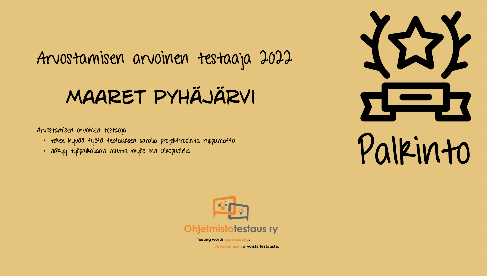

Arvostamisen arvoinen testaaja 2022
Maaret Pyhäjärvi on Suomen tunnetuin testaaja maailmalla. 25-vuotisen uransa aikana Maaret on vaikuttanut suomalaisen testausyhteisön elinvoimaisuuteen niin omassa organisaatiossaan kuin sen ulkopuolellakin. Hänet tunnetaan sivutoimisena kouluttajana ja kansainvälisenä keynote-puhujana joka on pitänyt testauspuheenvuoroja 28:ssa maassa lähes 500 session verran. Maaretin tiedot löytyvät suomalaisesta wikipediasta ja hänen ansioinaan voidaan pitää erityisesti tutkivan testauksen (exploratory testing), ryhmä- ja paritestauksen (ensemble & pair testing) sekä ryhmä- ja pariohjelmoinnin edistämistä. Hänen blogillaan on 800 000 sivujen katselukertaa ja hänen artikkelinsa päätyvät usein alan parhaimmistoa yhteenvetäviin uutiskirjeisiin. Twitterissä hän on kerännyt 8 000 seuraajan yleisön.
Maaret on valittu kolmena vuonna Tivin ICT-vaikuttajat 100 -listalle ja hän on aiemmin saanut molemmat merkittävät testausalan kansainväliset palkinnot MIATPP (Most Influential Agile Testing Professional Person) ja EuroSTAR Testing Excellence Award toistaiseksi ainoana maailmassa.
Projektityönsä ohella Maaret on kehittänyt testausta omissa organisaatioissaan, auttanut lukuisia organisaatioita organisaatioiden välisten benchmarkien kautta, kouluttanut tuhansia testaajia kursseilla ja mentorina, ja luonut kymmeniä uusia kansainvälisiä puhujia auttaen uusia puhujia alkuun. Testaajien lisäksi Maaret opettaa uusia ohjelmoijia, erityisesti lapsia ja alaa vaihtavia naisia tietotekniikkapolun alkuun.
Maaret toimii Vaisala Oyj:ssä johtavana testausasiantuntijana sekä on Tivia ry:n hallituksen jäsen.